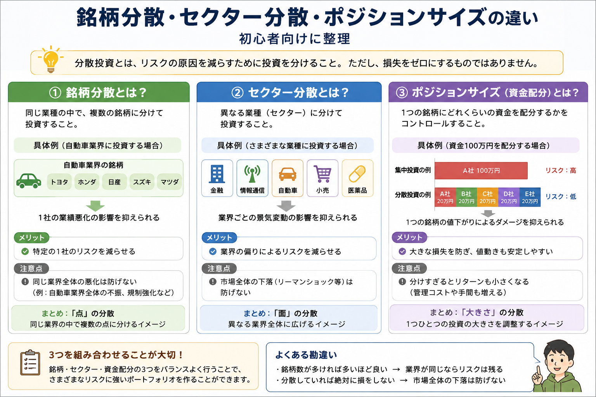

Investment Basics
分散投資とは？セクター分散と同じ業界に偏るリスクを初心者向けに解説
分散投資では「何銘柄持っているか」だけを見ても、実際の偏りは分かりません。 5銘柄、10銘柄に分けていても、半導体・銀行・AI関連など同じセクターやテーマへ集中していれば、共通材料で同時に動くことがあります。 この記事では一般的な銘柄分散から一歩進み、セクター分散・テーマの重なり・ポジションサイズまで含めて「中身の分散」を考えます。

Basics
分散投資は「銘柄数」だけでは判断できない
分散投資とは、投資資金を1つの投資先へ集中させず、複数へ分けるリスク管理の考え方です。 ただし、会社名が違うだけで十分に分散できているとは限りません。 同じ業界、同じテーマ、同じ景気要因に反応する銘柄ばかりなら、資産全体が似た方向へ動く可能性があります。
銘柄分散
1社だけに集中せず複数企業へ分ける基本的な分散です。企業固有の業績悪化や不祥事などの影響を抑える考え方です。
セクター分散
金融、食品、医薬品、情報通信など異なる業種へ分けます。同じ業界に共通する材料への集中を確認する視点です。
資金配分の分散
銘柄数が多くても1銘柄や1セクターの投資額が大きければ集中度は高くなります。ポジションサイズまで確認します。
今回のポイントは、「複数銘柄＝分散」と単純に考えないことです。 銘柄・セクター・テーマ・資金配分を重ねて見ることで、自分の資産が何の影響を強く受けやすいのか整理しやすくなります。 投資そのもののリスクについては 「投資のリスクとリターンの関係とは？」 もあわせて確認してみてください。
業種や資産も分ける
銘柄だけでなく、業種や地域、株式・債券などの資産種類まで分ける考え方もあります。 分散にはさまざまな段階があります。
損失をなくす方法ではない
分散していても市場全体が下落すれば、複数の投資先が同時に値下がりすることがあります。 「分散＝安全」ではありません。